Aplicación móvil para una tienda de mascotas
Documentación técnica: integración multimedia y optimización
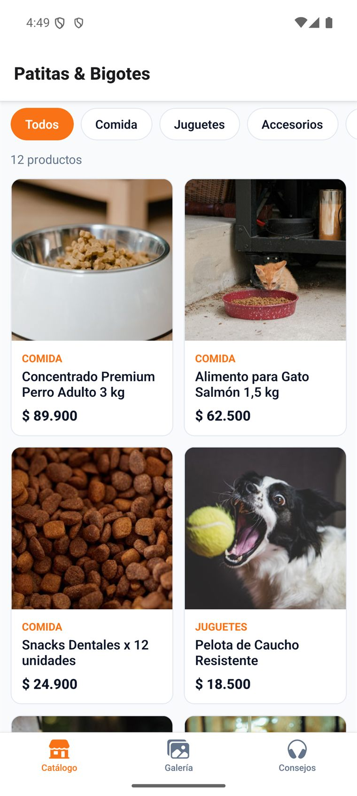
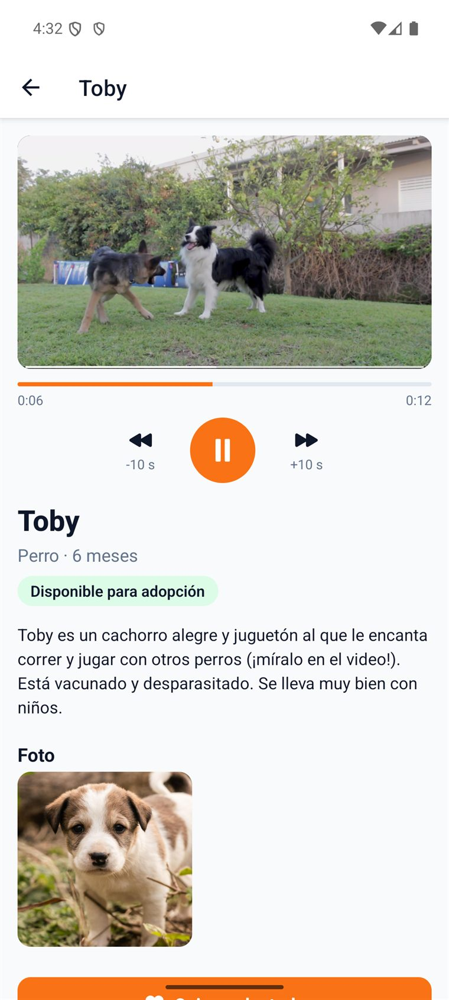
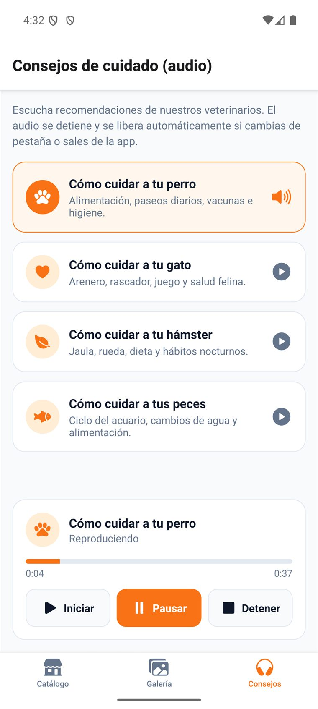
Patitas & Bigotes es una aplicación móvil para una tienda de mascotas. La temática sirve para demostrar tres capacidades técnicas: cargar imágenes de forma eficiente, reproducir video integrado y controlar audio, administrando correctamente la memoria y los recursos del teléfono.
| Requisito técnico | Cómo lo demostramos |
|---|---|
| Gestión de memoria y rendimiento | Imágenes pedidas al tamaño de pantalla y cacheadas por Glide; listas virtualizadas; la galería nunca crea reproductores; caché vaciada ante poca memoria. (Sección 6) |
| Ciclo de vida multimedia | Los reproductores solo existen mientras la pantalla está visible y la app en primer plano. Al cambiar de pantalla o salir, se desmontan y se liberan. Probado con dumpsys audio. (Secciones 7 y 9) |
| Uso de APIs y librerías | expo-image usa Glide en Android; expo-video usa ExoPlayer (Media3); expo-audio usa el reproductor nativo. (Sección 3) |
| Diseño responsivo | Columnas calculadas según el ancho; marcos con proporción fija y contentFit para que nada se deforme; diseños lado a lado en horizontal. (Sección 8) |
La siguiente matriz relaciona cada requisito del enunciado con la solución implementada y el archivo donde se puede revisar el código.
| Requisito | Solución | Archivo |
|---|---|---|
| Lista dinámica de productos | FlatList en cuadrícula, con filtro por categoría mediante chips. | src/app/(tabs)/index.tsx |
| Imagen, nombre, categoría y precio | Tarjeta memoizada con expo-image; precio en pesos colombianos. | src/components/TarjetaProducto.tsx |
| Vista de detalle | Pantalla nueva con ruta dinámica, descripción completa, características y stock. | src/app/producto/[id].tsx |
| Galería de imágenes y videos | Cuadrícula de mascotas con miniatura y etiqueta "VIDEO"; filtros Todas, Con video, Perros, Gatos y Otras. | src/app/(tabs)/galeria.tsx |
| Video integrado con pausa y adelantar | VideoView con controles nativos más botones propios: −10 s, reproducir/pausar y +10 s. | src/components/ReproductorVideo.tsx |
| Pistas de audio con consejos | 4 pistas WAV locales (perros, gatos, hámsteres y peces). | src/data/audios.ts |
| Reproductor: iniciar, pausar, detener | Panel con los tres botones, barra de progreso y tiempos. | src/components/ReproductorAudio.tsx |
| Requisito | Solución | Archivo |
|---|---|---|
| Carga eficiente de recursos | URL de imagen al ancho exacto en píxeles físicos; caché en memoria y disco; recyclingKey; precarga; video en streaming. | src/utils/imagenes.ts |
| Detener y liberar al cambiar de pantalla | Montaje condicional con useIsFocused(); los hooks de expo liberan el reproductor al desmontar. | src/app/(tabs)/consejos.tsx |
| Detener y liberar al salir de la app | Hook useAppActiva() basado en AppState; reproducción en segundo plano desactivada. | src/hooks/useAppActiva.ts, app.json |
| MediaPlayer/ExoPlayer y Glide | expo-video (ExoPlayer), expo-audio y expo-image (Glide). | package.json |
| Sin deformación en tableta o al girar | aspectRatio fijo + contentFit; columnas según el ancho; orientation: "default". | src/hooks/useColumnas.ts |
Elegimos React Native con Expo (SDK 58) en lugar de Kotlin nativo o Flutter. La razón principal es que las librerías multimedia de Expo usan por debajo exactamente las bibliotecas nativas que pide el enunciado: en Android, las imágenes se cargan con Glide y el video con ExoPlayer. Así cumplimos el requisito de "usar las herramientas recomendadas" y, además, el código funciona también en iOS.
| Necesidad | Librería (versión) | Motor nativo en Android | Motor en iOS |
|---|---|---|---|
| Imágenes | expo-image 58.0.18 | Glide (caché LRU en disco de hasta 250 MB) | SDWebImage |
| Video | expo-video 58.0.14 | ExoPlayer (Jetpack Media3) | AVPlayer |
| Audio | expo-audio 58.0.12 | Reproductor nativo de Android | AVAudioPlayer |
| Navegación | expo-router 58.0.32 | react-native-screens (vistas nativas) | UINavigationController |
| Opción | Ventajas | Por qué no la elegimos |
|---|---|---|
| Kotlin + Android Studio | Acceso directo a Glide y ExoPlayer. | Solo Android y más código para la interfaz. |
| Flutter | Muy buen rendimiento gráfico. | No usa Glide (tiene su propia caché de imágenes) y exige aprender Dart. |
| React Native + Expo | Usa Glide y ExoPlayer por debajo, recarga en caliente y un solo código para Android e iOS. | Elegida |
| Componente | Versión | Componente | Versión |
|---|---|---|---|
| Expo SDK | 58.0.26 | React | 19.3.0 |
| React Native | 0.88.1 | TypeScript | 6.0 (modo estricto) |
| Android de pruebas | Android 16 (API 36), Pixel 7 | Paquete JS para Android | 2,9 MB (1409 módulos) |
Usamos Expo Router: cada archivo dentro de src/app/ es una pantalla. Un Stack raíz contiene las pestañas y las pantallas de detalle; así, al abrir un detalle, este se apila encima de las pestañas y al volver se destruye.
src/ ├── app/ # Pantallas (Expo Router) │ ├── _layout.tsx # Stack raíz, modo de audio, aviso de poca memoria │ ├── (tabs)/_layout.tsx # Barra de pestañas │ ├── (tabs)/index.tsx # Catálogo │ ├── (tabs)/galeria.tsx # Galería de mascotas │ ├── (tabs)/consejos.tsx # Consejos en audio │ ├── producto/[id].tsx # Detalle de producto │ └── mascota/[id].tsx # Detalle de mascota + video ├── components/ # TarjetaProducto, TarjetaMascota, Chips, │ # ReproductorVideo, ReproductorAudio ├── hooks/ # useAppActiva (AppState), useColumnas (responsivo) ├── data/ # productos, mascotas, pistas de audio, tipos ├── utils/imagenes.ts # URL de imagen al tamaño justo └── theme.ts # Colores, espacios y formatos (precio, tiempo) assets/audio/ # 4 pistas de voz WAV (22 kHz, mono)
src/app): deciden cuándo montar un reproductor (foco y estado de la app).useAppActiva) y de diseño responsivo (useColumnas).Todas las imágenes usan el componente Image de expo-image, que en Android delega en Glide. Glide decodifica en segundo plano, reutiliza bitmaps y mantiene una caché en memoria y otra en disco.
const fuente = urlImagen(producto.imagen, ancho * PixelRatio.get()); {/* Contenedor cuadrado + contentFit="cover": la foto se recorta, nunca se deforma. */} <View style={styles.marcoImagen}> // aspectRatio: 1 <Image source={fuente} style={StyleSheet.absoluteFill} contentFit="cover" transition={200} // fundido suave al cargar cachePolicy="memory-disk" // caché en RAM y en disco recyclingKey={producto.id} // la lista recicla vistas sin mezclar imágenes /> </View>
El video se reproduce dentro de la app con VideoView, sin abrir YouTube ni el reproductor del sistema. El hook useVideoPlayer crea un reproductor ExoPlayer al montar el componente y lo libera automáticamente al desmontarlo. Sumamos controles propios a los nativos para cumplir explícitamente "pausa y adelantar".
const player = useVideoPlayer(uri, (p) => { p.loop = false; p.timeUpdateEventInterval = 0.5; // evento 'timeUpdate' cada medio segundo }); // Estado reactivo a partir de los eventos nativos del reproductor const { isPlaying } = useEvent(player, 'playingChange', { isPlaying: player.playing }); const { status } = useEvent(player, 'statusChange', { status: player.status }); <VideoView player={player} contentFit="contain" // conserva la proporción original nativeControls // barra de progreso y pantalla completa fullscreenOptions={{ enable: true }} allowsPictureInPicture={false} /> // Controles propios player.seekBy(-10); player.play(); player.pause(); player.seekBy(10);
Además, el componente muestra un indicador mientras carga (status === 'loading') y un mensaje si falla la red (status === 'error'). Al terminar el video, el botón principal cambia a "repetir" (player.replay()).
Los videos son MP4 H.264 de 720p, de entre 4 y 7 MB. Verificamos que tienen el índice (moov) al inicio del archivo, lo que permite empezar a reproducir antes de descargarlos completos, y que el servidor acepta peticiones por rangos (HTTP 206), lo que hace posible adelantar.
El reproductor de audio usa useAudioPlayer y useAudioPlayerStatus. Las pistas de voz las generamos con la síntesis de voz en español de Windows (voces Pablo, Helena y Laura), en WAV de 22 kHz mono: buena calidad para voz con archivos de unos 1,4 MB. Al estar empaquetadas en la app, funcionan sin internet.
const player = useAudioPlayer(pista.archivo, { updateInterval: 250 }); const estado = useAudioPlayerStatus(player); // playing, currentTime, duration, isLoaded… const iniciar = () => { if (estado.currentTime >= estado.duration - 0.25) player.seekTo(0); player.play(); }; const pausar = () => player.pause(); const detener = () => { player.pause(); player.seekTo(0); }; // detener = pausar + volver al inicio // Al terminar, vuelve al inicio para poder repetir useEffect(() => { if (estado.didJustFinish) { player.pause(); player.seekTo(0); } }, [estado.didJustFinish, player]);
setAudioModeAsync({ playsInSilentMode: true, shouldPlayInBackground: false, // nunca sonar en segundo plano interruptionMode: 'doNotMix', // pausa otras apps de música mientras suena });
El riesgo principal en una app con muchas fotos y videos es quedarse sin memoria (la app se "traba" o el sistema la cierra). Estas son las técnicas que aplicamos, de mayor a menor impacto.
Una foto original de un banco de imágenes puede medir 4000 × 6000 píxeles. Al decodificarla, cada píxel ocupa 4 bytes (RGBA), así que una sola foto ocuparía unos 96 MB de RAM. Una tarjeta del catálogo mide unos 190 dp de ancho, que en un Pixel 7 equivalen a unos 500 píxeles físicos: decodificada a ese tamaño, la imagen ocupa alrededor de 1 MB.
Por eso urlImagen() le pide al CDN la versión exacta que se necesita, calculando el ancho en píxeles físicos (dp × PixelRatio):
export function urlImagen(base: string, anchoPx: number): string { const ancho = Math.min(Math.round(anchoPx), 1600); // tope de 1600 px const [sinQuery] = base.split('?'); if (sinQuery.includes('images.pexels.com')) { return `${sinQuery}?auto=compress&cs=tinysrgb&w=${ancho}`; } // … mismo criterio para Unsplash return base; }
Ganamos por partida doble: se descargan menos datos y Glide decodifica un bitmap pequeño. En el detalle del producto se pide una versión más grande, limitada a 700 dp.
cachePolicy="memory-disk": al volver a una pantalla, la imagen sale de la RAM al instante; si el sistema liberó la RAM, sale del disco sin volver a descargarse.Image.prefetch() con la imagen grande, mientras se anima la transición a la pantalla de detalle.memoryWarning de AppState y vaciamos la caché en RAM (la de disco se conserva).AppState.addEventListener('memoryWarning', () => { Image.clearMemoryCache(); // libera RAM; las imágenes siguen en disco });
El catálogo y la galería usan FlatList, que solo mantiene montadas las filas cercanas a la pantalla. Así, la memoria no crece aunque la lista tenga cientos de productos.
| Propiedad / técnica | Efecto |
|---|---|
initialNumToRender={6} | Primer render rápido: solo 6 tarjetas al abrir. |
windowSize={5} | Mantiene montadas unas 5 pantallas de contenido alrededor de la visible (por defecto son 21). |
maxToRenderPerBatch={6} | Renderiza en lotes pequeños para no bloquear el hilo de la interfaz. |
removeClippedSubviews | Desconecta de la jerarquía nativa las vistas que están fuera de pantalla. |
memo + useCallback | Las tarjetas no se vuelven a renderizar si sus datos no cambiaron. |
recyclingKey | Al reciclar una vista no se ve por un instante la foto anterior. |
Un error común es poner un reproductor de video en cada tarjeta de la galería: con 5 videos habría 5 instancias de ExoPlayer compitiendo por los decodificadores de hardware, que son pocos. En Patitas & Bigotes, la galería solo muestra una miniatura con un ícono de play. El reproductor se crea al abrir el detalle, así que nunca hay más de un reproductor de video activo.
| Recurso | Formato elegido | Por qué |
|---|---|---|
| Video | MP4 H.264, 720p, 4–7 MB, faststart | Decodificación por hardware en cualquier Android; empieza a reproducirse sin descargarse completo. |
| Audio | WAV 22 kHz mono, ~1,4 MB | Suficiente para voz; local, sin depender de la red. |
| Imágenes | JPEG comprimido por el CDN | Peso mínimo al ancho exacto que se muestra. |
El enunciado exige que el audio y el video se detengan y liberen la memoria cuando el usuario cambia de pantalla o sale de la app. Lo resolvemos con una sola regla, aplicada en las dos pantallas multimedia:
reproductorMontado = enFoco && appActiva. El componente del reproductor solo se renderiza mientras la pantalla está visible y la app está en primer plano. Si cualquiera de las dos condiciones cambia, React desmonta el componente y useAudioPlayer / useVideoPlayer liberan el reproductor nativo.export function useAppActiva(): boolean { const [estado, setEstado] = useState<AppStateStatus>( (AppState.currentState as AppStateStatus | null) ?? 'active', ); useEffect(() => { const sub = AppState.addEventListener('change', setEstado); return () => sub.remove(); // limpiamos el listener al desmontar }, []); return estado === 'active'; }
Este fue el punto más delicado: las pestañas no se desmontan al cambiar de una a otra, porque React Navigation las conserva para que el cambio sea instantáneo. Si dependiéramos solo del desmontaje de la pantalla, el audio de Consejos seguiría sonando al pasar al Catálogo. Por eso la pantalla monta el reproductor solo cuando está enfocada:
const enFoco = useIsFocused(); const appActiva = useAppActiva(); const reproductorMontado = enFoco && appActiva; {pista && reproductorMontado && ( <ReproductorAudio key={pista.id} pista={pista} … /> // key: cambiar de pista libera la anterior )}
En el detalle de la mascota aplicamos la misma regla. Además, guardamos el segundo en que iba el video en una ref. Si el reproductor se libera (por ejemplo, porque el usuario fue a otra app), al volver se crea uno nuevo que retoma desde ese punto, en pausa. Mientras el reproductor no existe, se muestra solo la miniatura.
const posicion = useRef(0); // En Android, la pantalla completa nativa abre otra Activity y AppState reporta // "background": en ese caso no liberamos el video. const reproductorMontado = enFoco && (appActiva || pantallaCompleta);
const player = useVideoPlayer(uri, (p) => { const guardada = obtenerPosicion(); if (guardada > 0) p.currentTime = guardada; // ExoPlayer acepta la posición antes de cargar });
["expo-video", { "supportsBackgroundPlayback": false, "supportsPictureInPicture": false }], ["expo-audio", { "enableBackgroundPlayback": false, "recordAudioAndroid": false, "microphonePermission": false }]
Así, la build nativa ni siquiera declara el servicio de reproducción en segundo plano ni pide permiso de micrófono: la app solo usa lo que necesita.
| Evento del usuario | Qué pasa con el reproductor |
|---|---|
| Cambia de pestaña (audio) | useIsFocused pasa a falso → se desmonta → se detiene y libera. |
| Vuelve atrás desde el detalle (video) | La pantalla se destruye → useVideoPlayer libera ExoPlayer. |
| Presiona Home o cambia de app | AppState pasa a background → se desmonta → se libera. |
| Recibe una llamada | Igual que el anterior; además, Android quita el foco de audio. |
| Elige otra pista de audio | Cambia la key → se libera el reproductor anterior y se crea uno nuevo. |
La app se adapta a teléfonos en vertical, en horizontal y a tabletas. En app.json usamos "orientation": "default" (permite girar) y supportsTablet: true.
export function useColumnas(anchoMinimoTarjeta = 170, margen = 12) { const { width, height } = useWindowDimensions(); // se actualiza al girar const columnas = Math.max(2, Math.floor((width - margen) / (anchoMinimoTarjeta + margen))); const anchoTarjeta = (width - margen * (columnas + 1)) / columnas; return { columnas, anchoTarjeta, margen, esHorizontal: width > height, width, height }; }
Resultado: 2 columnas en un teléfono en vertical, 4 en horizontal y más en tableta. Como React Native no permite cambiar numColumns de una FlatList en caliente, le damos una key que depende del número de columnas para forzar un montaje nuevo al girar.
| Lugar | Técnica | Resultado |
|---|---|---|
| Tarjetas de listas | aspectRatio fijo + contentFit="cover" | La foto llena la tarjeta recortando los bordes, sin estirarse. |
| Detalle de producto | aspectRatio: 1 + contentFit="contain" | Se ve la foto completa con su proporción original. |
| Video | Marco 16:9 negro + contentFit="contain" | Videos verticales u horizontales se ven sin deformarse. |
| Video en horizontal | Ancho limitado por la altura disponible | El video cabe en pantalla y la información pasa al lado. |
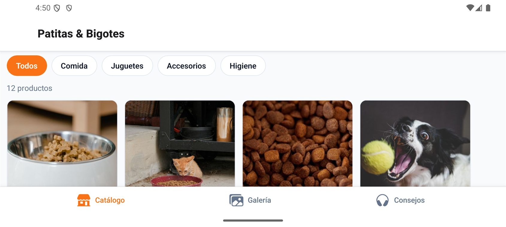
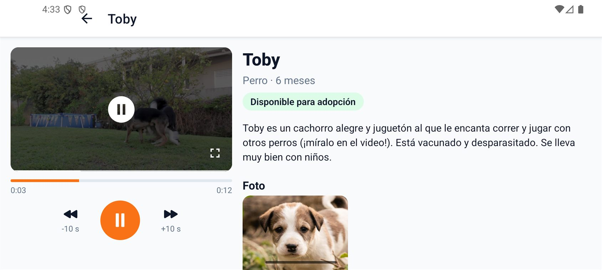
| Herramienta | Qué revisa | Resultado |
|---|---|---|
npx tsc --noEmit | Tipos de TypeScript en modo estricto. | 0 errores |
npx expo lint | ESLint con las reglas de React Hooks y del React Compiler. | 0 errores |
npx expo-doctor | Compatibilidad de dependencias y configuración. | 20/20 chequeos |
npx expo export -p android | Que el paquete de Android compile e incluya los audios. | 2,9 MB, 1409 módulos |
Probamos la app en un emulador Pixel 7 con Android 16. Para comprobar que el audio realmente se detiene, y no solo que la interfaz lo indica, consultamos a Android cuántos reproductores de audio están activos con adb shell dumpsys audio (líneas state:started):
| Paso | Acción | Reproductores activos |
|---|---|---|
| 1 | Elegir "Cómo cuidar a tu perro" en Consejos (empieza a sonar) | 1 (22 050 Hz, el formato de nuestras pistas) |
| 2 | Cambiar a la pestaña Catálogo | 0 |
| 3 | Volver a Consejos y pulsar Iniciar | 1 |
| 4 | Pulsar Home (salir de la app) | 0 |
Los videos usados no tienen pista de sonido, así que no aparecen en dumpsys audio. Su comportamiento lo verificamos visualmente en el emulador:
Las 20 imágenes y los 5 videos respondieron HTTP 200 con el tipo de contenido correcto, y cada imagen se revisó visualmente. Los videos son H.264 (avc1) con el índice moov antes de los datos y aceptan peticiones por rangos (HTTP 206).
Durante el desarrollo nos encontramos con estos problemas. Los documentamos porque muestran decisiones técnicas reales y cómo se depuraron.
| # | Problema | Causa | Solución |
|---|---|---|---|
| 1 | El audio seguía sonando al cambiar de pestaña (riesgo de diseño). | Las pestañas no se desmontan al cambiar entre ellas. | Montar el reproductor solo si useIsFocused() es verdadero. |
| 2 | Error de tipos: StyleSheet.absoluteFillObject no existe. | React Native 0.88 eliminó esa propiedad. | Estilo explícito: position: 'absolute' con top/left/right/bottom: 0. |
| 3 | Error de tipos con AppState.currentState. | En RN 0.88 su tipo es string y puede ser nulo. | Conversión de tipo y valor por defecto 'active'. |
| 4 | No se podía instalar ESLint ni otras dependencias (ERESOLVE). | npm elegía react-dom@19.3.1, que exige react@^19.3.1, pero Expo fija 19.3.0. | Instalar react-dom@19.3.0 con npx expo install. |
| 5 | expo-doctor: faltaban dependencias. | expo-font y expo-asset son dependencias nativas obligatorias. | Instalarlas; después, 20/20 chequeos. |
| 6 | El lint rechazó player.currentTime = x. | El React Compiler prohíbe modificar valores devueltos por un hook y leer ref.current durante el render. | Usar el método player.seekBy() y leer la posición con una función llamada dentro del evento. |
| 7 | El texto de los filtros salía recortado, sobre todo en horizontal. | La FlatList encogía el ScrollView horizontal de los chips. | flexShrink: 0 en la barra de chips. |
| 8 | El emulador se quedaba en "Bundling 25 %". | El firewall de Windows bloqueaba la conexión por la IP de la red local. | adb reverse tcp:8081 tcp:8081 y abrir la app por 127.0.0.1. |
| 9 | Al volver a la app, el video se reiniciaba en 0:00 en vez de seguir donde iba. | La posición solo se aplicaba con el evento readyToPlay, que puede llegar antes de que el componente empiece a escucharlo. | Aplicar la posición guardada al crear el reproductor; el evento queda como respaldo. |
git clone https://github.com/srwhite322/Huellitas.git
cd Huellitas
npm install
npx expo start # luego presionar "a" para abrir en el emulador de Android
adb reverse tcp:8081 tcp:8081 y volver a presionar a.npx expo run:android (requiere Android Studio) o npx eas-cli@latest build -p android --profile preview.app.json, como desactivar la reproducción en segundo plano, solo se aplican en una build nativa (APK). En Expo Go, el comportamiento lo garantiza el código: useIsFocused, useAppActiva y shouldPlayInBackground: false.npx tsc --noEmit # tipos npx expo lint # reglas de código npx expo-doctor # dependencias
Fotos y videos: Pexels, con la Licencia Pexels (uso libre, sin atribución obligatoria). Audios: generados con la síntesis de voz en español de Windows.
Capturas tomadas del emulador Pixel 7 (Android 16) con la app en ejecución.
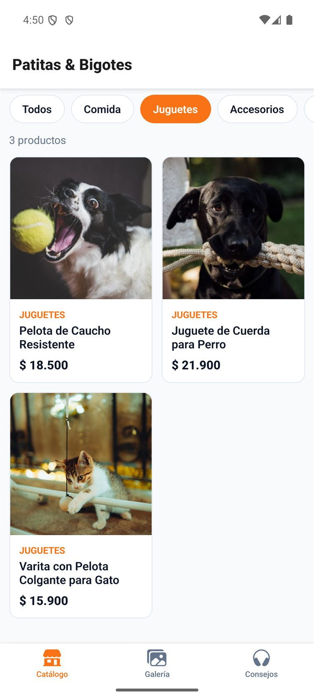
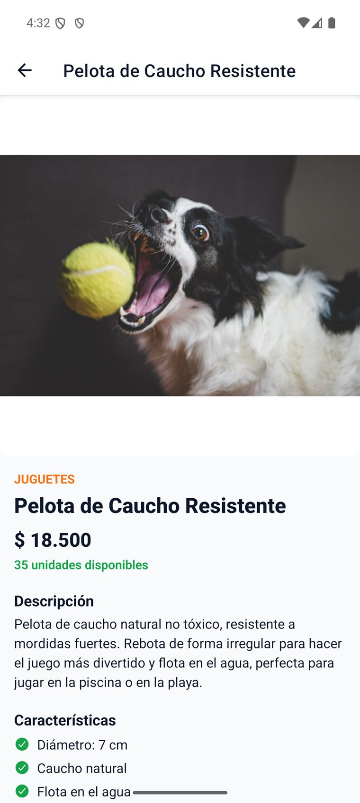
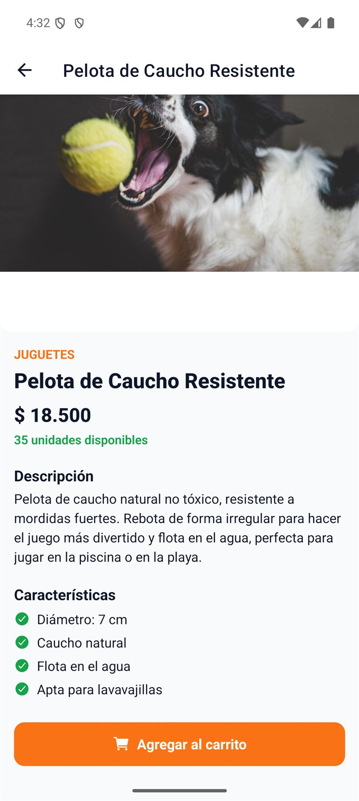
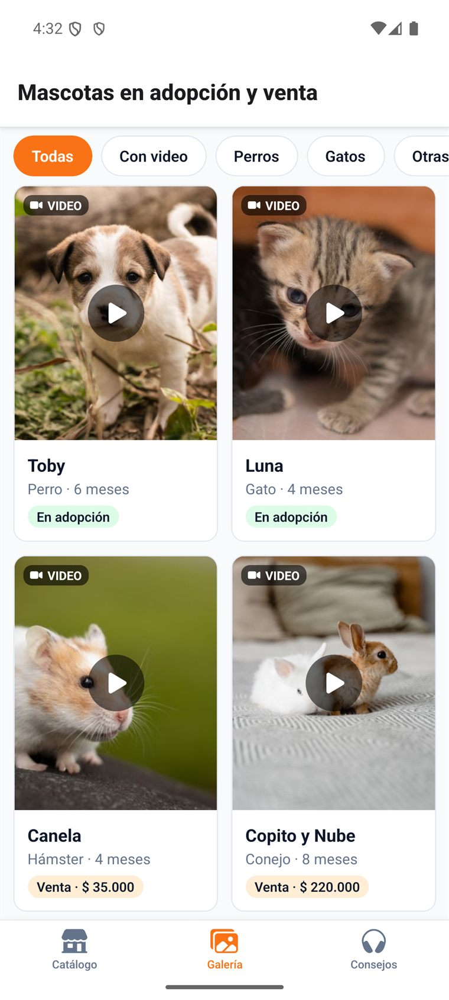
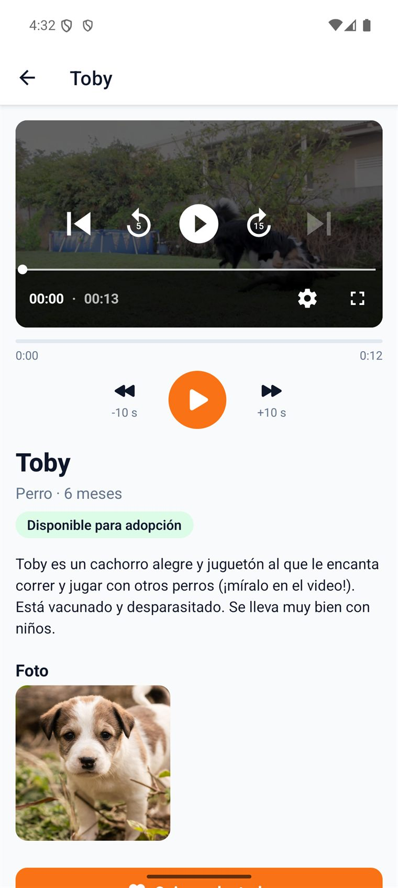
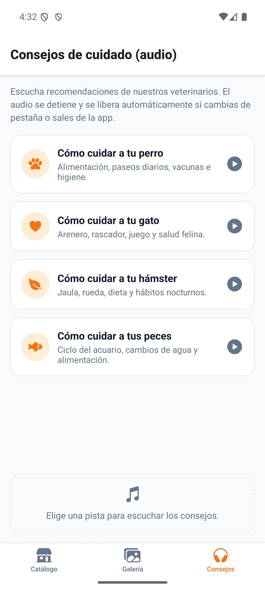
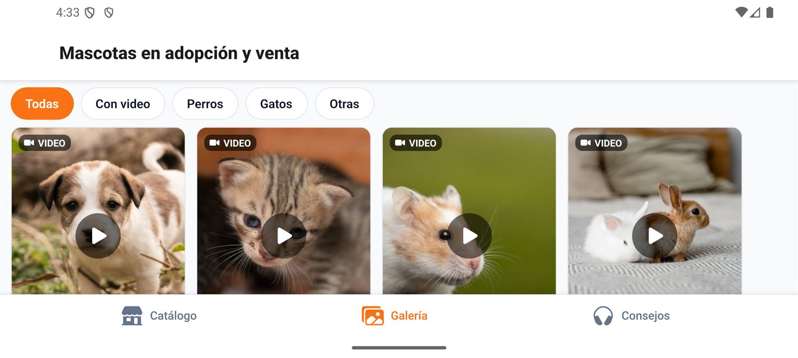
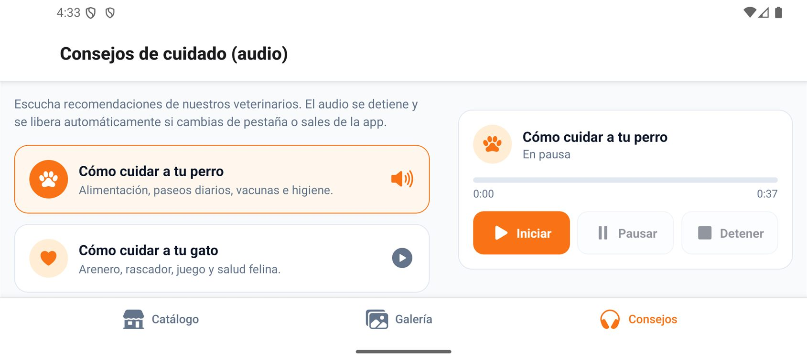